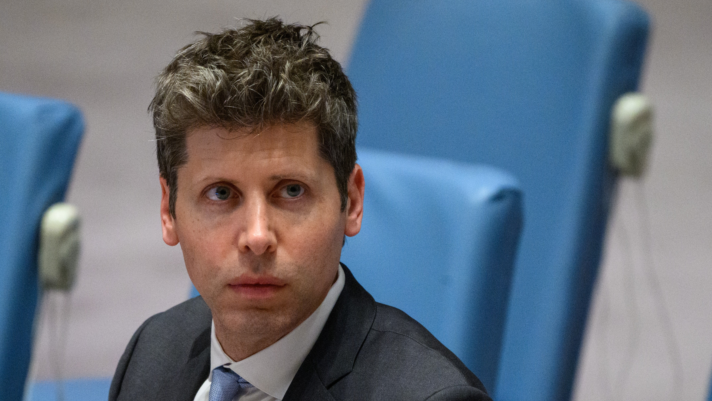

Altman Addresses Storm Over “Terrible” RAM Remarks

OpenAI boss Sam Altman has addressed the backlash over comments he made during a recent interview, where he described it as “quite terrible” for the world’s limited memory supply to sit unused in personal computers.
Speaking to YouTuber Cheeky Pint, Altman argued that data centres should make maximum use of scarce DRAM. The observation sparked ridicule, with critics suggesting that he wanted to remove personal ownership of memory and reserve resources for powerful artificial intelligence companies.
“I want you to have so much RAM... Let’s build more.” — Sam Altman
Altman later said that his words had been taken out of context. He insisted he wants people to put as much memory as they want into their computers and argued that the response was “f***ing annoying”. In a show of humour, he temporarily renamed his X account “Ram Altman”.
The reaction continued: even as Altman sought to clarify his meaning, the PC gaming community kept up a torrent of memes and criticism. The episode also arrives amid a broader “RAMpocalypse,” as AI demand and memory shortages drive up the cost of consoles, graphics cards and PC components.